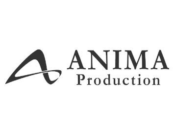

ホーム
芸工祭とは
学祭企画
教室企画
お問い合わせ
HOME
Menu
・ホーム
芸工祭とは
学祭企画
・イベント
テント企画
教室企画
イベント日程
・ご案内
企画団体の方へ
ご視聴の方へ
お問い合わせ
リンク
PP・免責等
2ken
installation
テーマ
｢ドキドキ・ワクワクを見に行こう｣
ノックをしたドアのその先にある世界はどんなだろう？
ドアを開けるまではその先に何があるかわからない。
広い？
狭い？
明るい？
暗い？
どのドアを選ぶかもどんな世界を見るかも自分次第。
さあ、あなたはどんなドアを開ける？
スケジュール
11.14
(Sat)
18:00〜20:00
参加方法
参加は無料です。
時間になりましたら以下からご覧いただけます。
アンケート
アンケート部署のコンテンツです。自分だけのドアを作ることができます。
ドアを作る
コメント欄
感想を送信できます。
Twitter
Facebook
コメントを
非
表示
すごくきれいでふしぎ
I would have wanted to experience it physically. Each room has a personality. Very well made.
映像で見てもとっても綺麗な、丁寧につくられた美術たちを生で見たかったな、体験したかったなという気持ちはやっぱりありますが、新しい体験の仕方でたのしかったです。個人的に外装とっても素敵で好きでした！にけんまたやりたくなった〜
卒業後数年見に行けていなかったので、オンライン開催とてもありがたかったです。ダイジェスト動画を観させていただきましたが、音に包まれる感覚やホールに入った瞬間の息を呑むようなスケール感の拡がり…まるで自分の足で多次元を歩いているかのような感覚でした。直接の来場がない中での設営、とても不安な思いだったと思いますが、関東から楽しんで観させていただきました。ありがとうございました＆大変お疲れさまでした。
福岡を離れて現地にいけなくなってしまったのでこういった形で見られるの本当にありがたい！ちゃんと体験できました！深海の底のような青がカラフルに染まる瞬間が好きです。最初の切り絵？みたいなところもアジアンで綺麗でした
本番の翌日にはダイジェスト動画が見られるように整えられてるの本当に仕事が早い！計画力の鬼。。先の見えないまま日々変わる状況への対応が求められて、例年以上に考えることが多かったと思います。それでもこんなに完成度の高い作品を最後まで作り上げて、多くの人に届けてくれたのが本当にすごい、えらい！とてもえらい！本当にお疲れ様でした！
カンパの声の掛からないような卒業後暫くの人間も投げ銭を出来るような方法があれば、頑張った後輩たちの予算補填やごほうびの飲食の支えになれるのだけれど。とにかくお疲れさまでした。ゆっくり休んでくれたらなと思います。とても素敵でした。遠くからも楽しめる素敵なコンテンツ達を、企画をありがとうございました。
過去の事例が参考にならないなか、たくさん頑張ったものかと思います。例年の作品ももちろん素敵なのは大前提で、それでも今年はことさらに頭を捻りものごとを如何に伝えるか苦労したかと思います。今年もまた想像の余地を残しつつ沢山の気持ちを詰め込んだ素敵な作品でした。
オンラインならではのやり方で今まで以上に2研の魅力が伝えられたんじゃないかと思います！アンケートのやり方が天才すぎた
お疲れ様です 光の表現が美しく、とても素敵な映像でした
本当にお疲れさまでした。とてもよかったです。
OGです。福岡を離れて数年経ちましたが、オンラインだからこそ久しぶりに2研が見れて嬉しかったです。このワクワクをずいぶん忘れていた気がします。お疲れ様でした！そしてありがとう〜
遠方から見ました。今年は芸工祭行けないだろうなと思っていたのでこんな形で見られてよかったです。とても素敵なインスタレーションでした。
OGです！まじでよくがんばりました！えらい！オンラインならではの作品になっていたと思います！！お疲れ様でした！！！
OBです。拍手喝采！制約が多かったと思いますが、よくここまで仕上げたと思います。嫉妬！
ほんま常人にはできひん芸当やでぇ。
美術ももちろん素晴らしかったですし、視聴者が実際にその空間にいるかのような演出が素晴らしかったです！アンケまでもしっかり2研を表現されていて感動しました！
制約が多い中、かえってすごい作品になっているような…感動しました！オンラインだからこそ、離れた地域に住む人とか、たくさんの人に観てほしい
すごく大好きな企画でした、アンケートまで最高だった！画面のドアから多次元に跳んでいけたらなと思ってしまうくらいワクワクする素敵な企画でした。お疲れさまでした！OGより
ホールの造形物がホントに綺麗でした。。。
映画みたい
現実世界と虚構世界を結ぶドアがとうとう開かれたんですね。
インスタレーションのVR動画配信＋視聴者参加型インタラクションに大きな可能性を感じました。コロナ禍の制約が逆に新しい表現方法の扉を開けてしまったような。
まるで美術館のようで、素晴らしかったです。オンラインではなく、実際に目で見てみたかったです。
OBです。当時のことを思い出しながら見てました。世の中を取り巻く状況が非常に苦しい中で知恵を絞り、今回の一つの作品を作り上げたことに敬意を表します。すごく面白かったです。お疲れ様でした。
わくわくしました〜
オンラインならではの発想もあって、いろんな技術に挑戦する姿勢はさすが芸工生だなぁと嬉しくなりました。素敵でした！！
オンラインならではの発想もあって、いろんな技術に挑戦する姿勢はさすが芸工生だなぁと嬉しくなりました。素敵でした！！
拙者僭越ながら感涙いたし候 芸術とはその本質を捉えること能はず、しかし誠良きものでござるな・・・
ストーリー仕立ての映像よかった～～、かわいいだけでなく少しダークな世界観好き！あと音がすごい良い、バイノーラルな、立体的な感じ？イヤホンで聴くことを意識して作ってあるのかなあ。
チームラボ的で楽しい！
インフィニティドアすこだった
OBです！娘と一緒にドアつくりました！仕掛けに感動しました〜！空間の作り込みも凄かったので実物見てみたかったですが、オンラインでのインタラクションの仕掛けにも感動しました！ご苦労様です！
OGです。とっても綺麗で、素晴らしくて感動しました☺️コロナで大変な中本当にお疲れ様でした！！
ドアを作ったあとの映像がすごいなぁ！
おつかれおつかれ
OBです。今年はコロナで大変だったと思いますが本当に素晴らしいです！
こんばんは。見ていて気持ちよかったです。
おばんです。
こん！
お疲れ様です
すごい！ドア作ってみました〜〜！！
法大から来ますた
すごそうだ…
準備完了！
wktk
わくわく
全裸待機して待ってます！！！
ドアを作るとは？？？？わくわく！！！
綺麗な仕上がりになりました！ぜひ〜
２研ってオンラインでどうやるのｗ
頑張ったので見てください！！！！！
OGです｡楽しみにしています。
オンラインでこその企画を楽しみにしてます(^-^)/
毎年楽しみにしてました！オンライン開催頑張ってください！！
コメントは承認制のため、表示に時間がかかることがあります。詳しくは
こちら
をご覧ください。
学祭企画
zenya
３研
５研
火祭
２研
今見ています
CBA
Panf
教室企画

ANIMA


コメント欄